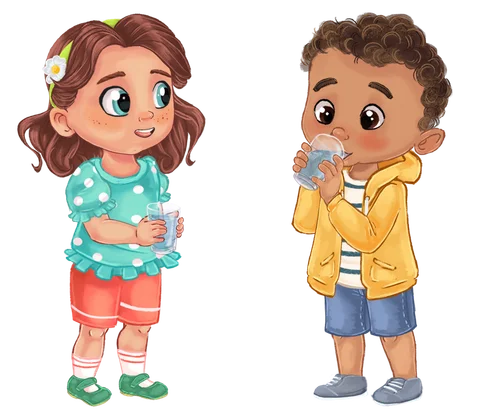

Conhecemos
o Bando
Entramos no universo da história e conhecemos as personagens, percebendo como o corpo fala connosco todos os dias.
Apresentações para escolas e instituições
Uma experiência interativa e divertida sobre o corpo, a barriga e os seus sinais, pensada para crianças dos 3 aos 7 anos.
Não é uma sessão de leitura, mas sim uma conversa viva, com histórias, personagens e atividades que ajudam as crianças a conhecer melhor o seu corpo com naturalidade.
Pedir informações →

Perguntas essenciais
Levamos o universo do Bando da Barriga a escolas, bibliotecas, livrarias e outras instituições, com sessões adaptadas a cada grupo.
Como funciona
Uma atividade dinâmica e envolvente, pensada para ensinar com naturalidade e alegria. Ao longo de quatro momentos, as crianças exploram o corpo, aprendem a reconhecer os seus sinais e descobrem como cuidar melhor dele.

Entramos no universo da história e conhecemos as personagens, percebendo como o corpo fala connosco todos os dias.
Vamos descobrir, de forma divertida, o que faz bem e o que não faz tão bem à nossa barriga e ao nosso corpo.

Com atividades práticas e muito movimento, as crianças experimentam, sentem e aprendem através do corpo e da brincadeira.

No final, cada criança torna-se um Capitão do Bando da Barriga e faz um juramento especial para cuidar do seu corpo todos os dias.
Na prática
As crianças não ficam apenas a ouvir: respondem, movimentam-se, experimentam coisas novas, riem e participam do princípio ao fim. É uma experiência viva, pensada para despertar a curiosidade e criar bons hábitos com naturalidade.

Sim! A apresentação é altamente participativa. As crianças são convidadas a responder a perguntas, a movimentar-se, a experimentar e a partilhar as suas ideias. Tudo acontece de forma leve e divertida, num ambiente seguro e acolhedor.
No final da atividade, cada criança é convidada a tornar-se um Capitão do Bando da Barriga. Este momento especial simboliza o compromisso de escutar o seu corpo, cuidar da sua barriga e fazer escolhas que lhe fazem bem - hoje e todos os dias.

A apresentação é pensada especialmente para crianças dos 3 aos 7 anos, com uma linguagem simples, visual e prática, adequada a cada faixa etária. Pode ser adaptada a diferentes contextos, como escolas, bibliotecas, livrarias e outras instituições.
Se representa uma escola, biblioteca, livraria, associação ou outra instituição e tem interesse em receber o Bando da Barriga, entre em contacto connosco para mais informações.
Pedir informações →